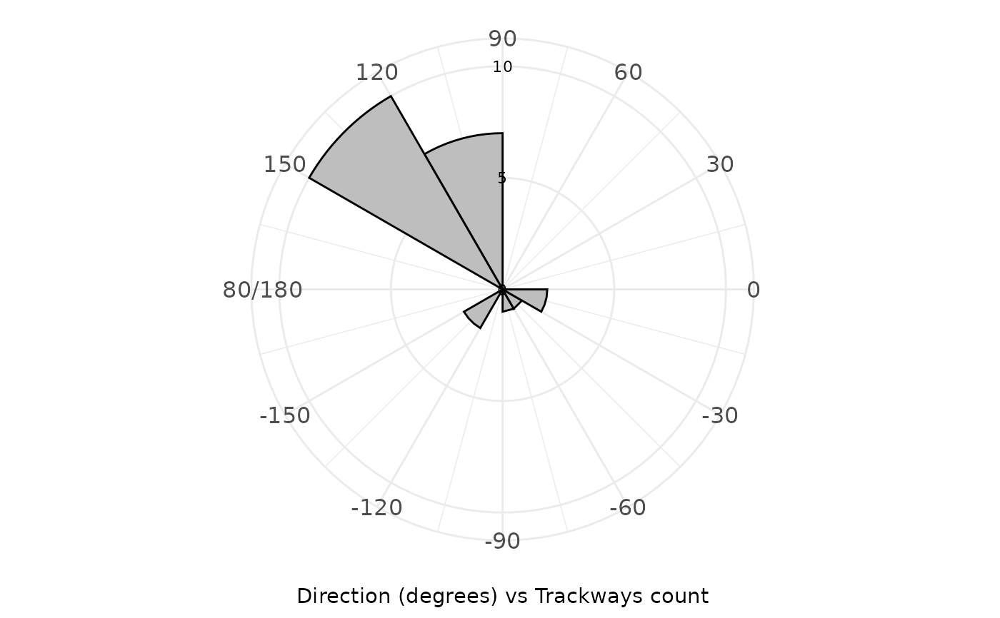
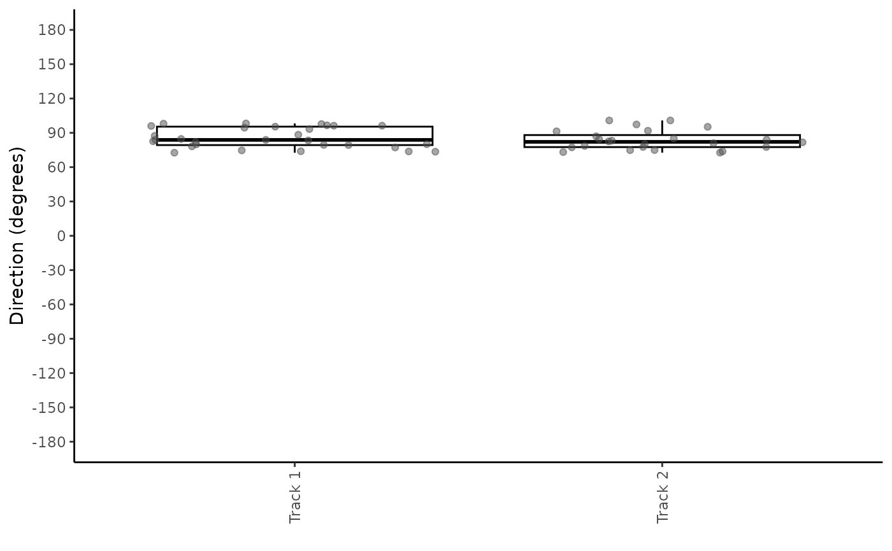
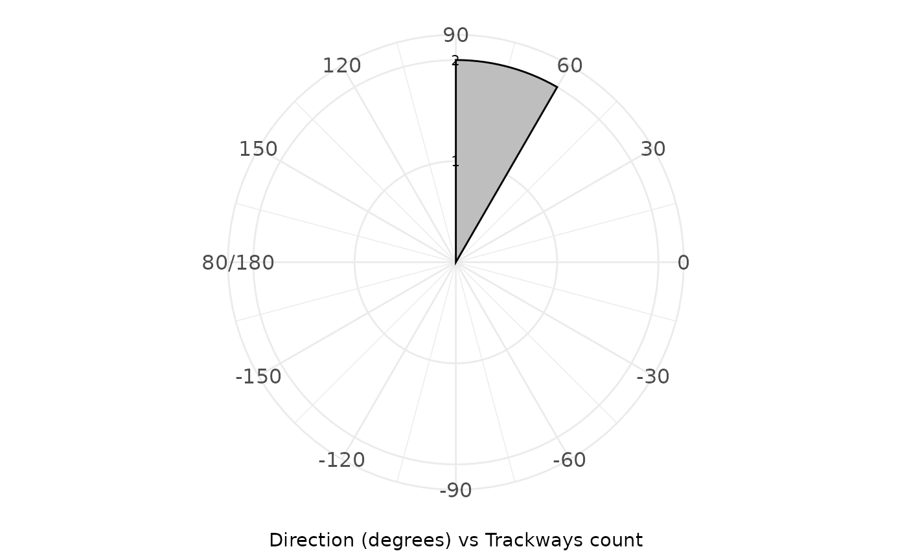
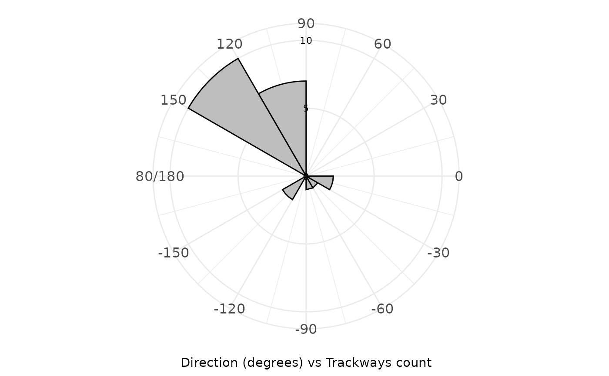
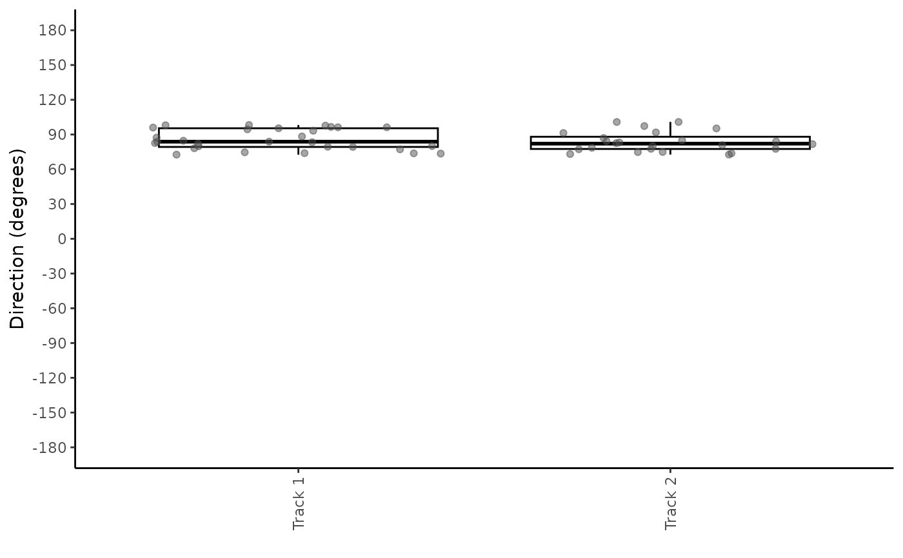
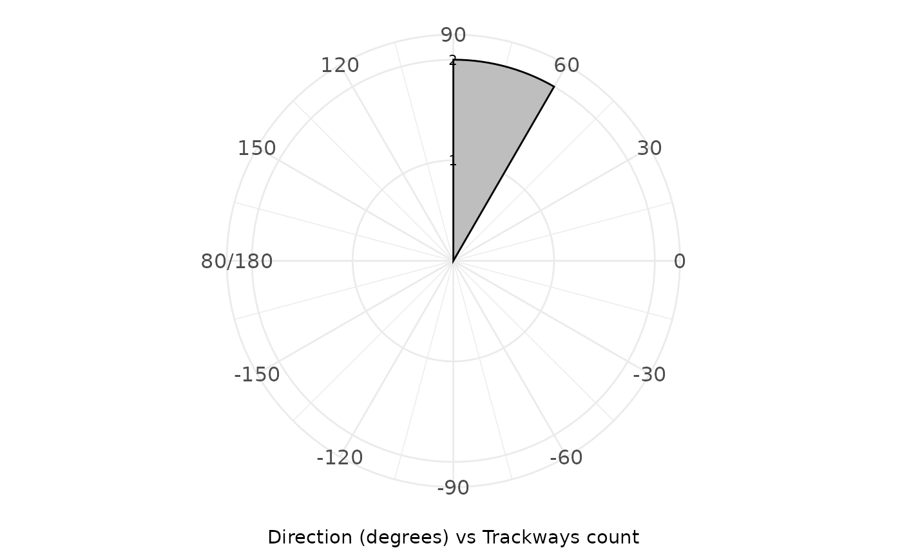

plot_direction() generates different types of plots to visualize the direction data from track R objects. The function allows for the creation of boxplots, polar histograms of step directions, polar histograms of average directions per track, and faceted polar histograms.
Usage
plot_direction(
data,
plot_type = "boxplot",
angle_range = 30,
y_labels_position = 90,
y_breaks_manual = NULL
)Arguments
- data
A
trackR object, which is a list consisting of two elements:Trajectories: A list of interpolated trajectories, where each trajectory is a series of midpoints between consecutive footprints.Footprints: A list of data frames containing footprint coordinates, metadata (e.g., image reference, ID), and a marker indicating whether the footprint is actual or inferred.
- plot_type
A character string indicating the type of plot to generate. The options are
"boxplot","polar_steps","polar_average", and"faceted". Default is"boxplot".- angle_range
A numeric value specifying the width of the bins (in degrees) used for polar plots. Default is
30degrees.- y_labels_position
A numeric value specifying the position (in degrees) of the y-axis labels in the polar plots. Default is
90degrees.- y_breaks_manual
A numeric vector specifying manual breaks for the y-axis in polar plots. If
NULL, the breaks are calculated automatically. Default isNULL.
Value
A ggplot object that displays the specified plot type. The ggplot2 package is used for plotting.
Details
The plot_direction() function provides four types of plots:
"boxplot": A boxplot showing the distribution of step direction values for each track."polar_steps": A polar plot showing the frequency of step in different direction bins."polar_average": A polar plot showing the frequency of average directions per track in different direction bins."faceted": A polar plot similar to"polar_steps"but faceted by track.
The angle_range parameter defines the bin width for the polar plots,
and y_labels_position allows for adjusting the position of y-axis labels.
The y_breaks_manual parameter lets users manually specify the breaks
on the y-axis for finer control over the appearance of the polar plots.
Author
Humberto G. Ferrón
humberto.ferron@uv.es
Macroevolution and Functional Morphology Research Group (www.macrofun.es)
Cavanilles Institute of Biodiversity and Evolutionary Biology
Calle Catedrático José Beltrán Martínez, nº 2
46980 Paterna - Valencia - Spain
Phone: +34 (9635) 44477
Examples
# Example 1: Boxplot of Direction Data in MountTom Dataset
plot_direction(MountTom, plot_type = "boxplot")
# Example 2: Polar Plot of Step Directions in MountTom Dataset
plot_direction(MountTom, plot_type = "polar_steps")
 # Example 3: Polar Plot of Average Directions Per Track in MountTom Dataset
plot_direction(MountTom, plot_type = "polar_average")

# Example 4: Faceted Polar Plot of Step Directions in MountTom Dataset
plot_direction(MountTom, plot_type = "faceted")
# Example 5: Polar Plot with Custom Angle Range in MountTom Dataset
plot_direction(MountTom, plot_type = "polar_steps", angle_range = 90)
# Example 6: Polar Plot with Custom Y-Axis Labels and Breaks in MountTom Dataset
plot_direction(MountTom,
plot_type = "polar_steps", y_labels_position = 0,
y_breaks_manual = c(0, 15, 30, 45, 60)
)
# Example 7: Boxplot of Direction Data in PaluxyRiver Dataset
plot_direction(PaluxyRiver, plot_type = "boxplot")

# Example 8: Polar Plot of Step Directions in PaluxyRiver Dataset
plot_direction(PaluxyRiver, plot_type = "polar_steps")
# Example 9: Polar Plot of Average Directions Per Track with Custom Breaks in PaluxyRiver Dataset
plot_direction(PaluxyRiver,
plot_type = "polar_average",
y_breaks_manual = c(1, 2)
)

# Example 10: Faceted Polar Plot of Step Directions in PaluxyRiver Dataset
plot_direction(PaluxyRiver, plot_type = "faceted")
# Example 11: Polar Plot of Average Directions Per Track with Custom Breaks in PaluxyRiver Dataset
plot_direction(PaluxyRiver,
plot_type = "polar_average",
y_breaks_manual = c(1, 2)
)
# Example 3: Polar Plot of Average Directions Per Track in MountTom Dataset
plot_direction(MountTom, plot_type = "polar_average")

# Example 4: Faceted Polar Plot of Step Directions in MountTom Dataset
plot_direction(MountTom, plot_type = "faceted")
# Example 5: Polar Plot with Custom Angle Range in MountTom Dataset
plot_direction(MountTom, plot_type = "polar_steps", angle_range = 90)
# Example 6: Polar Plot with Custom Y-Axis Labels and Breaks in MountTom Dataset
plot_direction(MountTom,
plot_type = "polar_steps", y_labels_position = 0,
y_breaks_manual = c(0, 15, 30, 45, 60)
)
# Example 7: Boxplot of Direction Data in PaluxyRiver Dataset
plot_direction(PaluxyRiver, plot_type = "boxplot")

# Example 8: Polar Plot of Step Directions in PaluxyRiver Dataset
plot_direction(PaluxyRiver, plot_type = "polar_steps")
# Example 9: Polar Plot of Average Directions Per Track with Custom Breaks in PaluxyRiver Dataset
plot_direction(PaluxyRiver,
plot_type = "polar_average",
y_breaks_manual = c(1, 2)
)

# Example 10: Faceted Polar Plot of Step Directions in PaluxyRiver Dataset
plot_direction(PaluxyRiver, plot_type = "faceted")
# Example 11: Polar Plot of Average Directions Per Track with Custom Breaks in PaluxyRiver Dataset
plot_direction(PaluxyRiver,
plot_type = "polar_average",
y_breaks_manual = c(1, 2)
)
 # Example 12: Polar Plot with Custom Y-Axis Labels in PaluxyRiver Dataset
plot_direction(PaluxyRiver,
plot_type = "polar_steps",
y_labels_position = -90
)
# Example 12: Polar Plot with Custom Y-Axis Labels in PaluxyRiver Dataset
plot_direction(PaluxyRiver,
plot_type = "polar_steps",
y_labels_position = -90
)